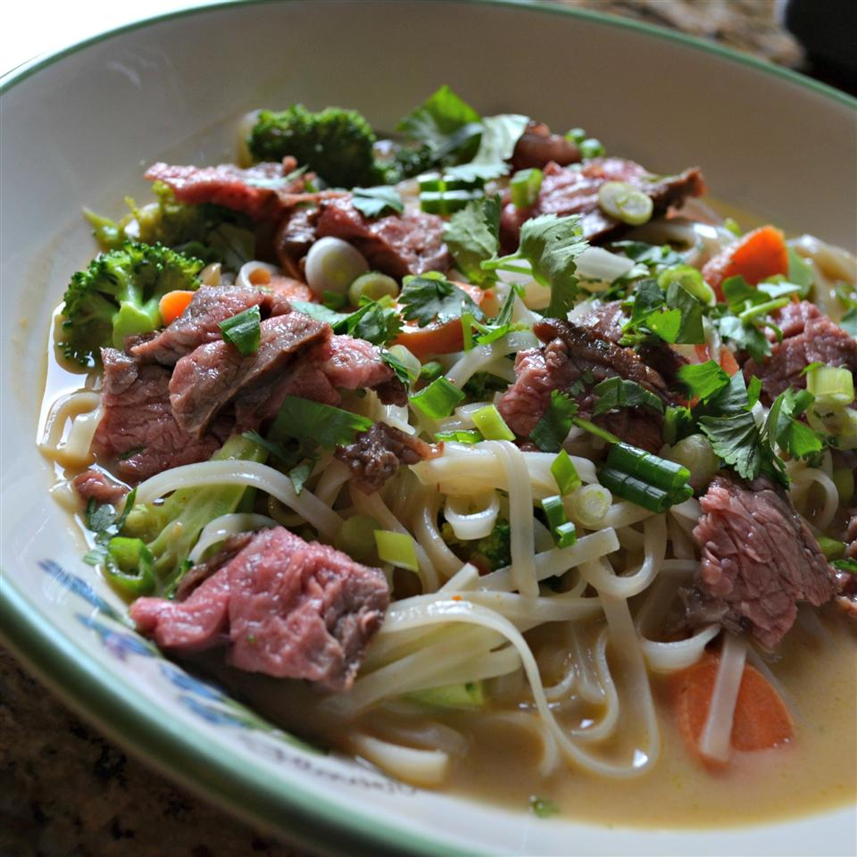

Asian Noodle Bowl

About This Dish
Tneder slices of broiled bison skirt steak are sesrved atop steaming bowls of Asian-inspired noodle soup with veggies and your choice of oppings.
Ingredients
- 1 pound bison skirt steak or bison ribeye steak
- 2 tablespoons soy sauce
- 1 (14.5 ounce) can beef broth
- 2 cups water
- 6 ounces vermicelli rice noodles or angel hair pasta
- ¾ cup purchased peanut sauce
- 2 cups bite-size broccoli florets
- 2 medium carrots, cut into thin bite-size strips
- ¼ cup chopped peanuts
- 2 each sliced green onions
- 2 tablespoons chopped fresh cilantro
- 1 teaspoon Asian chili sauce (Sriracha sauce)
- 1 teaspoon Soy sauce
Directions
- Preheat broiler. Place bison skirt steak on the unheated rack of a broiler pan. Brush both sides of bison skirt steak with the 2 tablespoons soy sauce. Broil 4 to 5 inches from the heat for 5 to 6 minutes or until an instant-read thermometer registers 145 degrees F, turning once. Cover with foil and let stand for 10 minutes.
- Meanwhile, bring broth and water to boiling over medium-high heat in a large saucepan. Add vermicelli noodles and cook, uncovered, for 3 minutes or until noodles are tender. Use kitchen scissors to snip the noodle strands into smaller pieces. Stir in peanut sauce, broccoli, and carrots. Remove from heat. Cover and let stand for 10 minutes.
- Thinly slice bison skirt steak against the grain into bite-size pieces. Divide noodle mixture among 4 bowls. Top with bison skirt steak pieces. Sprinkle with peanuts and green onions or cilantro. If desired, serve with Asian chili sauce and additional soy sauce.